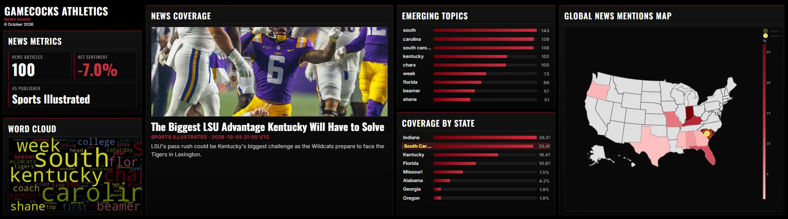
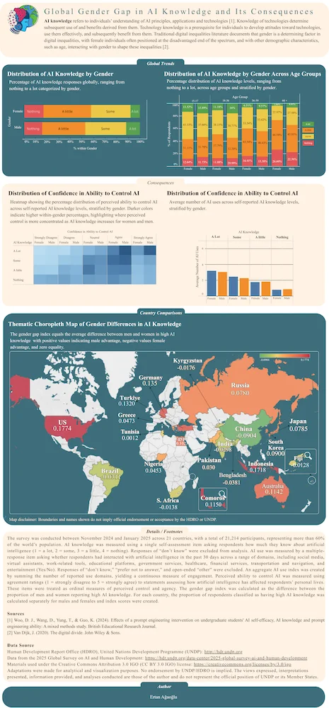
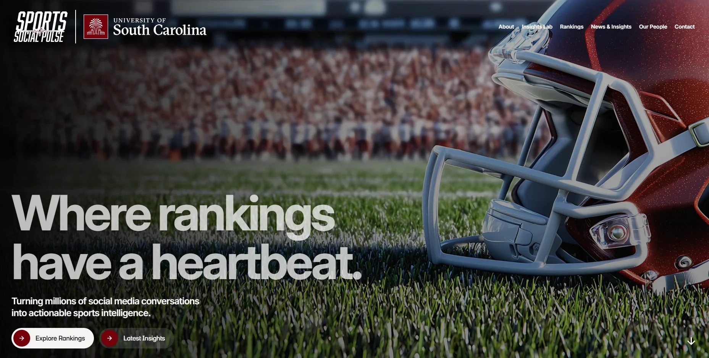

Apps, dashboards, and visualizations that turn data into clear stories, along with my work in AI, from podcasts to chatbots.

A real-time news analytics dashboard that tracks media coverage of any topic. Keywords are set in an admin panel, and the app pulls matching articles from NewsAPI and FreeNews APIs, deduplicates records, and displays sentiment analysis, emerging topics, word clouds, and geographic coverage metrics. Everything is customizable through the admin panel.
Features include dynamic headline rotation, VADER sentiment scoring, and a toggle between country-level and US state-level coverage views powered by Plotly choropleth maps. Built for the USC Social Media Insights Lab with a digital-signage layout optimized for 3072×864 displays and full responsive support.
Python · Data aggregation · Real-time API integration · Multi-page Streamlit apps · Configurable analytics dashboards
View demo →
This visualization won first place in the University of South Carolina, University Libraries 2026 Data Visualization Awards. It shows gender differences in AI knowledge and how age interacts with gender to shape digital inequality. It draws on the 2025 Global Survey on AI and Human Development from the UNDP Human Development Reports, covering 21 countries. Because AI knowledge is measured on an ordinal scale, averages would be misleading and tables quickly become cluttered, so I designed the visuals to make the patterns clear to general audiences.
Design choices
Tableau · Canva · RStudio
View full visualization → Read the news →

College Sports Social Pulse™
Sports Social Pulse™ is a University of South Carolina College of Information and Communications initiative that turns millions of social media conversations into actionable intelligence for media organizations, athletic departments, conferences, sponsors, and brands. I developed the software behind it for the USC Social Media Insights Lab, an app that ranks college sports teams, players, and coaches by virality.
The app pulls mentions, engagement, and sentiment from a social listening platform and combines them into a single virality score from 0 to 100. Schools are ranked within their own conference, while players and coaches are ranked across the league. The lab can adjust what gets tracked and how it is scored, and export results for further analysis.
By turning raw social data into clean, comparable rankings, the app gives the program's data science, sports business intelligence, and strategic storytelling a reliable foundation for uncovering the stories, trends, and fan behaviors driving the conversation around college sports.
Python · Data aggregation · OAuth 2.0 API integration · Entity resolution · Configurable analytics dashboards
See the reports here →